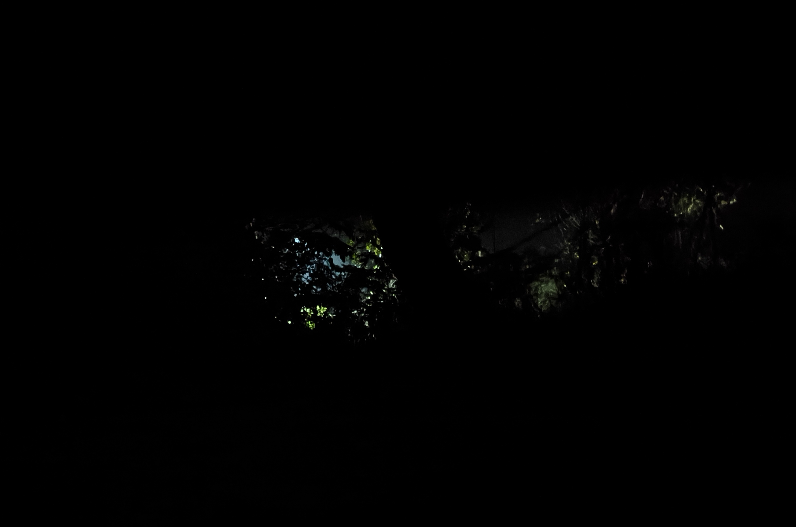

01
01
终于下定决心出来云游了，目前采用的方式是骑行

第一步就搞砸了，整的包太重了，应该有五六十斤，车上也不好放，只能背着，肩膀痛，坐垫还又窄又硬压的屁股还痛。
一天半骑半推，才走了五十多公里
上图的时间不知他的算法是什么样的，今天在路上花费了应该有十一二个小时，难道我休息了一半时间🙄
因为实在太痛了我就想整个袋子，分出点东西放到后面架子上，正好垫高然后背包的底也能挨着，再分担点重量，正好路上捡到一个还算干净的白色编织袋，明天试试效果如何
还有之前选帐篷的时候太注重轻量化了，选了一个只有五百多克的帐篷，我现在感觉完全不实用，先将就睡着吧，祈祷不下雨

才七点多，外面天已经很黑了，准备睡觉，晚安
